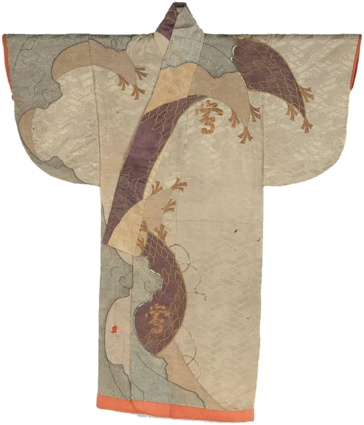

Robe (Kosode) with Fishing Net and CharactersJapan · Edo period · probably ca. 1660sThe Metropolitan Museum of Art, 2011.155 · Public domain
An online exhibition · ten rooms · audio guide
Kimono着物
Is a kimono a garment, or a set of rules?
Pick one and hold your answer. It is settled in the last room, not before.
Room 1 · Structure
From one bolt to a flat T
Before it is a garment, it is a roll of cloth. Watch it unroll, divide into eight pieces and come together again as a flat T.
-
1The bolt
One bolt, one kimono 反物
A bolt is about 36–38 cm wide and about 12 m long, and one bolt makes one kimono [7] p.76.
More
In the old units: 9 sun 5 bu to 9 sun 8 bu wide, 3 jō or more long. One shaku, about 38 cm, is 10 sun [7] p.80.
-
2The width
Everything follows the width
The proportions of every part of a kimono derive from the width of the bolt [8] p.50.
-
3The cut
Eight rectangles
Two body panels, two sleeves, two okumi, a collar and an over-collar: eight rectangles [7] p.76.
More
No pattern is drafted; the cut only divides [7] p.80. Sleeves and body panels first, the rest split for okumi and collar, as Ōtsuka Sueko put it in 1972 [7] pp.79-80.
-
4Nothing left
The whole bolt is used
The bolt is cut and used entire, with nothing left over [7] p.76.
More
Becke, quoting Dalby, gives the first mark of a kimono as
[A] geometrical use of standard fabric widths sewn with minimal cutting
[4] p.10. -
5The seams
Straight seams, sewn by hand 手縫い
Traditionally a kimono is sewn by hand, without large stitches showing on the face [7] p.76.
More
The seams have names: the back seam, senui, and the side seams, wakinui [7] p.77.
-
6The T
No darts, no tucks
In its unworn form, a kimono has a completely flat surface.
[4] p.10More
Becke again:
no tucks or darts are added to the fabric which would provide the garment with a three-dimensional shape
[4] p.10.
Eight rectangles, and not one dart.
Room 2 · Structure
The front, the fit, the re-making
Turn to the front of the T. Each piece has a name, the fit is a matter of measurement, and the whole robe could be taken apart again.
-
1The front edge
Okumi and collar 衽・衿
Each front carries an extra panel, the okumi [7] p.76. The collar is
an attached neckband sewn around the front opening
[4] p.10.More
The eri is
simply cut out in long band
[22] p.528; the kakeeri, the over-collar, is the eighth piece [7] p.76. Standard okumi: 15 cm [8] p.49. -
2Fitted to her
As long as she is tall 身丈・裄
Mitake, the body length, equals the wearer's height; yuki, back centre to sleeve opening, is fitted to her build [7] p.76.
-
3Re-making
Unpick it, and it is cloth again 繰り回し
Kimono were remade, kurimawashi, as seasons, uses and wearers changed, and as cloth wore out [7] p.75.
Room 3 · Fabric and season
Warmth is woven, not cut
One shape all year. What suits a robe to cold or warm months is the weave and the lining, not the cut [6] p.20.
Room 4 · Pattern and its coding
The flat cloth as a canvas
Unworn, a kimono is flat [4] p.10: an ideal canvas for dyers, painters and embroiderers
[4] p.11.

Robe (Kosode) with Fishing Net and Characters
Silk and metallic thread embroidery, tied resist dyeing on satin damask
Koide dates the Kanbun era 1661–73 [10] p.603; its kosode style leaves the back open around big, moving motifs [10] p.592. The record names no style.
The Metropolitan Museum of Art, 2011.155. Purchase, Harris Brisbane Dick Fund, Mary and James G. Wallach Foundation and Parnassus Foundation/Jane and Raphael Bernstein Gifts, and funds from various donors, 2011. Public domain (CC0).
The Metropolitan Museum of Art, 2011.155 · Public domain
Look closer
Room 5 · Kitsuke
Kitsuke: putting it on
A flat robe gets its final fit and shape
only in the dressing, called kitsuke [4] p.11.
-
1Before the layers
Taught and certified 着付け
Kimono academies spread across Japan after the war [4] p.77, issuing
certificates after the completion of certain courses
[4] p.78.More
In a 2006 survey of 128 women students at one university, 8.6 per cent could put on a kimono themselves [27] p.774.
-
2Juban, then kimono
Left over right
Furisode magazines begin with the under-kimono and end with the obi knot [4] p.72. The robe is
always draped from the left side over to the right
[4] p.69.More
The other way round
is now associated with death and the afterlife
[4] p.70. -
3The tuck
Ohashori おはしょり
The extra length becomes
the fold of fabric beneath the obi
[4] p.71.More
In a yukata study of nine young women, the fold slipped less when the cord was tied at the top of the hip bone than at the waist [19] p.81.
-
4The obi
Where the pressure falls 帯
In a study of nine young women, clothing pressure was highest at the obi's upper edge, near the armpit [21] p.53.
More
Of 333 graduating students in kimono, about eight in ten felt it two to three times as constricting as Western clothes [21] p.56.
-
5Last
Cord, sash and knot
Magazines set the obi-jime
in the middle of the obi
, add an obi-ageto complete the ensemble
[4] p.71, and tie the knotfacing the wearer's back
[4] p.71.
Room 6 · Body language
The body in the robe
From behind: the knot, the collar, the hem. Then, on the wall, prints of robes being worn and put on.
-
1The knot
Younger than it looks
The taiko or drum knot, a furisode magazine notes,
was not born until the late Edo period
[4] p.110. -
2The nape
Collar set back from the neck
In a 1976 study of three women, the best collar set-back was 3 to 5 cm [22] p.530.
-
3The hem
Level, just above the feet
In magazines the hem is set straight and
always ends just above the models' feet
[4] p.70.More
In a gait study of three women, a level hem gave longer strides than one raised at the front corners [23] p.695.
-
4Movement
Walking, sitting, stairs
Furisode magazines teach
how to appropriately move one's body when walking and sitting down
[4] pp.79-80.More
The result, Becke argues, is
constant monitoring and correcting of one's body
[4] p.80. -
5Posture
Where the obi sits
In a lab study of eight young women, the low obi position used by men helped in
stabilizing the body trunk, straightening posture
[18] p.126.More
Women's obi today sit higher, from under the bust to the waist [20] p.23.
Room 7 · The kimono family
One shape, many relatives
Over-robe, jacket, trousers, under-robe: one family. In kimono, design signals the occasion and season, and the wearer's age and standing [4] p.11.
Room 8 · Four centuries
From under-layer to national dress
It began as an under-layer [30] p.516. Then came laws, drapers, prints, a new name and, after the war, a rulebook [4] p.75.
Room 9 · Relatives and influence
Relatives and influence
Robes that left Japan, and robes from its neighbours. Each comparison on this wall is one a scholar made.
Room 10 · Garment or rules: both
A garment, and a set of rules
Both. Becke defines kimono by the garment's shape and practice of fitting it to the body
[4] p.10.
- Left side over right [4] p.69
- Under-kimono first, obi knot last [4] p.72
- A fold of cloth beneath the obi [4] p.71
- Lined from October until May [6] p.20
- Unlined in the warm months [6] p.20
- No motifs of a season that has passed [6] p.27
- The flower a month before it blooms [4] p.62
- Long sleeves for the unmarried [4] p.53
- All-over repeats are less formal [4] p.62
- Black crested haori: the most formal [37] P-386
- Early Edo: silk above, cotton and hemp below [39] p.438
Rules can be bended
[4] p.123
Sources for the rules on the robe
- Left side over right [4] p.69
- Under-kimono first, obi knot last [4] p.72
- A fold of cloth beneath the obi [4] p.71
- Lined from October until May [6] p.20
- Unlined in the warm months [6] p.20
- No motifs of a season that has passed [6] p.27
- The flower a month before it blooms [4] p.62
- Long sleeves for the unmarried [4] p.53
- All-over repeats are less formal [4] p.62
- Black crested haori: the most formal [37] P-386
- Early Edo: silk above, cotton and hemp below [39] p.438
Rules can be bended
[4] p.123
Both: the cloth, and the way it is worn.
Real photographs and hand-built 3D; nothing generated. Narration: synthetic voice (Venice AI).